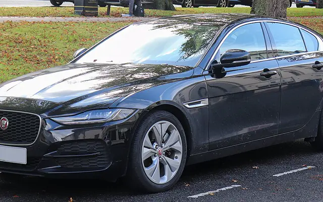

Par Motor › Precios por modelo › Jaguar XE
Precio de segunda mano · noviembre de 2026¿Cuánto vale un Jaguar XE de segunda mano?

Precio justo estimado de un Jaguar XE usado en España, año por año, con los kilómetros normales para su edad y en buen estado: de 13.400 € a 33.300 €. Para tasar el tuyo con sus kilómetros reales y su estado, usa el tasador gratis.
Precios del Jaguar XE por año
XE (2015–2024)
Precio de nuevo: 2.0 i4 200 CV, 40.000 € · 20d 2.0 163 CV, 40.000 € · 2.0 i4 250 CV, 45.000 €
| Año | Km normales | 2.0 i4 200 CV · Gasolina | 20d 2.0 163 CV · Diésel | 2.0 i4 250 CV · Gasolina |
|---|---|---|---|---|
| 2024 | 35.000 km | 29.600 € | 28.500 € | 33.300 € |
| 2023 | 50.000 km | 26.900 € | 25.800 € | 30.200 € |
| 2022 | 65.000 km | 24.400 € | 21.500 € | 27.400 € |
| 2021 | 80.000 km | 21.200 € | 19.300 € | 23.900 € |
| 2020 | 95.000 km | 18.000 € | 18.700 € | 20.300 € |
| 2019 | 100.000 km | 16.500 € | 18.000 € | 18.600 € |
| 2018 | 100.000 km | 15.700 € | 17.300 € | 17.700 € |
| 2017 | 100.000 km | 14.900 € | 16.500 € | 16.800 € |
| 2016 | 100.000 km | 14.200 € | 15.100 € | 15.900 € |
| 2015 | 100.000 km | 13.400 € | 13.700 € | 15.100 € |
La cadena de distribución se estira y puede romperse, con avería grave del motor. Pide el historial de mantenimiento y pregunta si se ha cambiado la cadena.
Kilómetros normales: 15.000 al año en gasolina, híbridos y eléctricos, y 20.000 en diésel, con un máximo de 100.000 km (por encima no tasamos: el precio depende demasiado del historial de cada coche). Cifras redondeadas a 100 €.
Preguntas frecuentes
¿Cuánto vale un Jaguar XE de segunda mano?
Según el año, la versión y los kilómetros, un Jaguar XE usado vale hoy de 13.400 € a 33.300 € en España. El más barato de nuestra tabla es un 2.0 i4 de 2015 (13.400 €) y el más caro un 2.0 i4 de 2024 (33.300 €). Son precios justos estimados entre particulares y profesionales, con los kilómetros normales para su edad y en buen estado.
¿Cuánto valor pierde un Jaguar XE al año?
Con unos años encima, un Jaguar XE pierde alrededor de un 12 % de su valor cada año (calculado sobre el 2.0 i4 de la generación XE). Los primeros años la caída es mayor y a partir de los 70.000 km se acelera.
¿Qué motorizaciones tiene el Jaguar XE?
En nuestra base de datos hay versiones gasolina y diésel, en 1 generación: XE.
¿Qué motores del Jaguar XE dan problemas?
Ojo con el Land Rover y Jaguar 2.0 diésel Ingenium (cadena) (20d 2.0, 25d 2.0, 2015–2019): son motores con fallos graves y muy extendidos. Antes de comprar uno, pide el historial de mantenimiento y comprueba si ya se hizo la reparación. El resto de motores no tiene problemas fuera de lo normal.
¿Cómo sé si me piden demasiado por un Jaguar XE?
Abre el tasador de Par Motor, elige el Jaguar XE, el año y los kilómetros reales, y escribe lo que te piden. Te diremos si está por debajo del precio justo (chollo) o por encima (caro). Es gratis y no pide registro ni matrícula.
Otros Jaguar
Compara su coste real
El precio de compra es solo una parte. Mira cuánto te costaría al mes con combustible, seguro, neumáticos, mantenimiento y lo que pierde de valor.
Abrir el comparador →